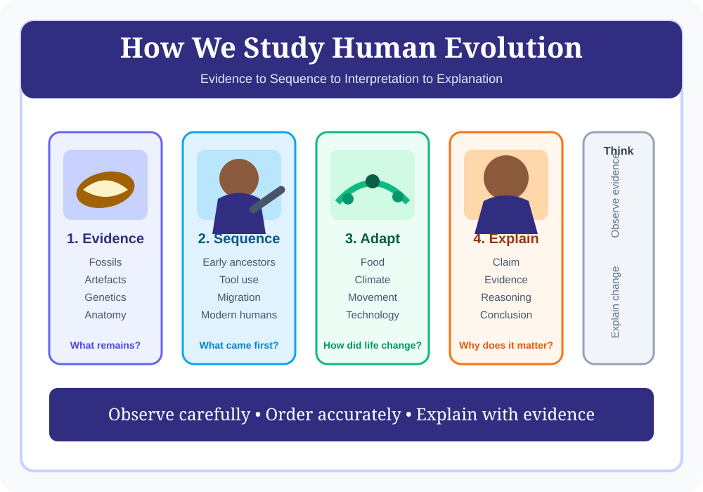

Fossil evidence
What can bones or footprints tell us about earlier humans?
Professional Teaching Portfolio
A reflective collection of planning, teaching resources, learner assessment, and professional practice.
Professional profile and portfolio introduction
Purpose of this section: Introduce the teacher, professional values, and the evidence presented in this portfolio.
BERIL OCHIENG
History Student · Aspiring History Teacher
I am a student of History with an interest in understanding how humans, societies, and environments changed over time. I seek to develop accurate historical knowledge, strong inquiry skills, and respect for evidence.
I believe History should help learners ask questions, examine evidence, understand cause and consequence, and make thoughtful judgments about the past. My goal is to create an inclusive classroom where every learner can communicate ideas clearly and engage confidently with historical sources.
This portfolio documents a learning sequence on human evolution. It brings together curriculum planning, a lesson plan, teaching materials, learner evidence, and a record of work.
Teacher reflection: My strengths include curiosity, careful use of evidence, and an interest in helping learners understand change over time. This portfolio demonstrates growth in planning, teaching, assessment, inclusion, and reflection.
Curriculum focus and intended learning outcomes
Purpose of this section: Show how the learning sequence connects to the approved History syllabus.
TOPIC FOCUS
Strand / theme: Early humans and human development · Sub-topic: Stages of human evolution · Class / level: Grade 10 · Curriculum: Approved school syllabus, 2026
Historical inquiry · chronological reasoning · evidence analysis · communication · collaboration · critical thinking.
Respect for evidence · curiosity · open-mindedness · patience · accuracy · cooperation.
Teacher reflection: The sequence is designed to move from basic vocabulary and timelines to interpretation of evidence and adaptation. Visuals, guided discussion, pair work, and written or oral responses support varied learners.
A short sequence for teaching and learning
Purpose of this section: Map the topic across lessons so learning builds from concepts to evidence and application.
School: Chepterit Girls · Term: [Add term] · Class: Grade 10 · Week range: Weeks 1–3 · Teacher: BERIL OCHIENG
| Week | Lesson | Topic / content | Objectives | Activities | Resources | Assessment |
|---|---|---|---|---|---|---|
| Week 1 | 1 | Meaning and evidence of human evolution | Define evolution and identify sources of evidence. | Brainstorm; source prompt; whole-class discussion. | Textbook; fossils and artefact images. | Oral questions; concept check. |
| Week 2 | 2 | Major stages and physical change | Sequence stages and compare adaptations. | Card ordering; pair explanation; guided video. | Sequence cards; board; approved video. | Sequence check; pair feedback. |
| Week 3 | 3 | Environment and adaptation | Explain links between climate, tools, movement, and survival. | Think-pair-share; case study; exit ticket. | Maps; scenario cards; learner notebooks. | Written response; review task. |
Adapt this sequence to the approved curriculum and school timetable.
Teacher reflection: The sequence progresses from definition and evidence to chronological comparison and environmental explanation. It gives learners repeated opportunities to demonstrate understanding.
History · Evolution of Man
Purpose of this section: Provide a teachable lesson structure with clear learning intentions, learner participation, and assessment.
School: Chepterit Girls · Date: [Add date] · Class: Grade 10 · Duration: 40 minutes · Strand: Early humans and human development
By the end of the lesson, learners can define evolution, identify evidence used by historians and archaeologists, and sequence major stages of human development.
Learners may know that species change, but could misunderstand evolution as linear progress. Address this using accurate, evidence-based examples.
Approved textbook; evidence images; sequence cards; board and markers; learner notebooks; exit tickets.
| Stage / time | Teacher actions | Learner actions | Assessment for learning |
|---|---|---|---|
| Introduction · 5 min | Show a fossil or artefact image. Ask what it reveals and what further evidence is needed. | Predict, observe, and discuss. | Identify prior knowledge and misconceptions. |
| Explain · 10 min | Define human evolution and distinguish evidence from speculation. | Record key terms and examples. | Check definitions and source types. |
| Explore · 12 min | Give pairs sequence cards showing major human-development stages. | Order cards and explain choices using evidence. | Observation checklist: accuracy and evidence. |
| Apply · 8 min | Present an environment-change scenario. | Explain one adaptation and support the claim. | Listen for cause-and-effect reasoning. |
| Conclude · 5 min | Summarise and issue an exit ticket. | Complete: “The evidence tells us…”. | Use responses to plan reteaching or extension. |
Provide word banks, image prompts, paired rehearsal, read-aloud support, and oral or written responses. Extend confident learners with source reliability questions.
Post-lesson reflection: Learners should distinguish evidence from opinion and explain that human evolution involved adaptation and change over time. Use exit tickets to identify misconceptions and plan support.
Teaching guide, visual support, and YouTube lesson
Purpose of this section: Provide practical video-assisted teaching guidance alongside a linked lesson video.

Teacher reflection: The visual supports source observation, chronology, and adaptation without relying on internet video access. Learners should pause to identify evidence, explain change over time, and distinguish fact from interpretation.
Printable evidence and adaptation sorting cards
Purpose of this section: Provide a ready-to-use card activity to help learners connect evidence with human development and adaptation.
What can bones or footprints tell us about earlier humans?
What can objects made or used by people reveal about daily life?
How could changes in climate or food sources affect survival?
Use evidence to explain one change that helped people respond to their environment.
Print this page or use the cards on screen. Check historical examples against the approved class textbook.
Teacher reflection: The cards give learners a structured, collaborative way to discuss evidence and adaptation. Add images or local examples from approved learning resources as needed.
Learner-friendly summary · Evolution of Man
Purpose of this section: Give learners a clear reference for key concepts, evidence, and vocabulary.
Human evolution is the long-term change of humans and their ancestors over many generations. Evidence comes from fossils, archaeology, anatomy, genetics, and the study of environmental change. Evolution should be understood as a branching process, not a straight line from “primitive” humans to modern people.
“Study the evidence, identify change over time, and explain it using cause and consequence.”
Evolution: long-term change in inherited characteristics. Adaptation: a feature or behaviour that improves survival or reproduction in a particular environment. Fossil: preserved remains or traces of past life. Artefact: an object made or modified by humans.
Teacher reflection: Reinforce accurate scientific vocabulary and discourage common misconceptions. The approved textbook and curriculum should determine the exact stages covered.
Assessment evidence and next steps
Purpose of this section: Summarise learner progress against the lesson objectives and use evidence to plan responsive teaching.
Replace this sample table with the approved Grade 10 results. Follow school policy for consent, confidentiality, and storage.
| Assessment focus | Evidence / measure | Results | Interpretation / next step |
|---|---|---|---|
| Defines human evolution | Exit ticket | Record actual results | Clarify evolution and branching processes. |
| Uses evidence | Source task | Record actual results | Model claim, evidence, and explanation. |
| Explains adaptation | Written scenario response | Record actual results | Strengthen cause-and-effect reasoning. |
[Add verified learner names, admission numbers, marks, grades, and approved teacher comments.]
[Summarise the class average, highest and lowest performance, grade distribution, and identified learning needs.]
Prompt: “The evidence suggests that early humans adapted to environmental change because…”
Use anonymised or approved work only.
Analysis and teacher reflection: Compare results with the lesson objectives. Reteach chronology or evidence where needed, model source interpretation for developing learners, and extend confident learners with comparative or reliability questions.
Teaching record and follow-up notes
Purpose of this section: Maintain a dated record of curriculum covered, learning activities, and follow-up.
School: Chepterit Girls · Class: Grade 10 · Term: [Add term] · Teacher: BERIL OCHIENG
| Date | Topic / content covered | Activities / resources used | Teacher remarks / follow-up |
|---|---|---|---|
| [DD/MM/YYYY] | Meaning and evidence of human evolution | Discussion, source prompt, evidence images | [Coverage, learner response, next step] |
| [DD/MM/YYYY] | Major stages and physical change | Sequence cards, timeline, pair explanation | [Coverage, learner response, next step] |
| [DD/MM/YYYY] | Environment and adaptation | Scenario task, discussion, exit ticket | [Coverage, learner response, next step] |
| [DD/MM/YYYY] | [Revision or additional topic] | [Activities and resources] | [Remarks / follow-up] |
Teacher reflection: [Record what was completed, content carried forward, learner needs, and the next planned learning.]